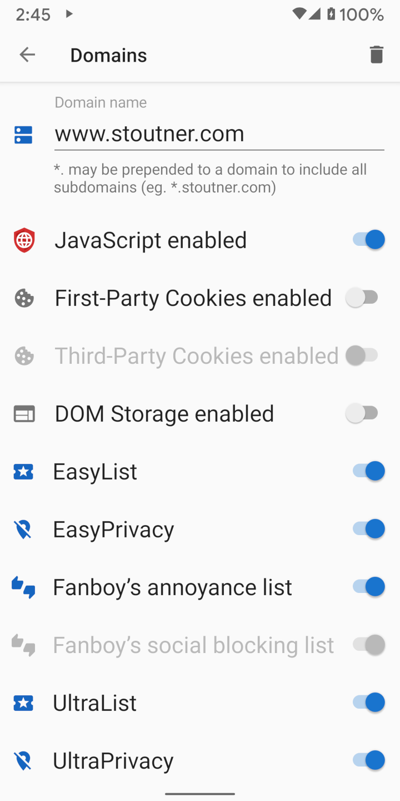

Clear Browser’s default is to browse with JavaScript, cookies, and DOM storage disabled. However, some websites legitimately need these features enabled to function correctly. Domain settings can automatically turn on a specified set of features when visiting a designated domain.
When visiting a domain that has domain settings specified, the background of the URL text box is green.